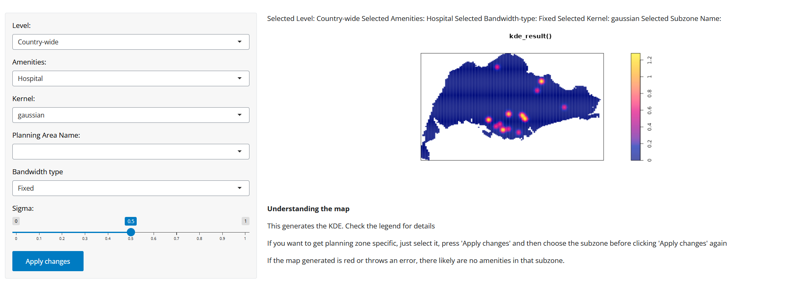
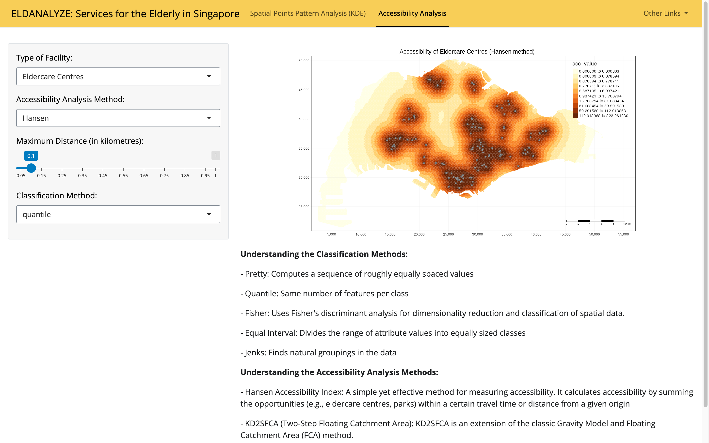

User Guide
1 Spatial Points Pattern Analysis (KDE)
This tab allows for the user to see the kernel density estimation of the various amenities throughout Singapore, both nationally and per planning zone.

On the left, there is the sidebar to navigate through the different available options.
Steps:
Select which level you want to view. (Country-wide or Planning Area-specific)
- If Planning Area-specific is selected, click on “Submit changes” and subsequently select the planning area name
Select the amenity of interest
Select which kernel type you want to view
Select the type of bandwidth you want
- If you select “Fixed”, choose the exact bandwidth you’d like from the slider
A new map will be generated for each submission made.
Interpretation:
Nation-wide accessibility
In general, the amenities were fairly evenly distributed throughout Singapore
However, hospitals are mostly clustered around the Central area and Punggol.
Planning Area-Specific
- For the planning area-specific analysis, there were some areas that had 0 of some amenities. This could be addressed as the elderly would have to travel a substantial distance in order to have access to certain amenities.
2 Accessibility Analysis
The Accessibility Analysis tab allows users to observe the accessibility index across different areas in Singapore as a whole.

Steps:
Select the Type of Facility you want the visualization to produce.
Select the Accessibility Analysis Method, which would produce the type of accessibility index you would like the visualization to reflect.
Select the Maximum Distance to be travelled (from the place of residence to the facility).
Select the Classification Method the visualization will use to group the accessibility indexes.
Interpretation:
In general, higher accessibility index values reflect better accessibility, while lower values suggest poorer accessibility.
Higher Values:
Many opportunities (e.g., jobs, services) reachable within the specified distance or time from the origin.
Suggest that the area is well-connected and easily accessible, with ample resources or services available within a reasonable travel distance or time.
Lower Values:
Fewer opportunities reachable within the specified distance or time from the origin.
Area is more remote or poorly connected, with limited access to the facilities within the given travel constraints.
Spatial Patterns:
- Clusters of high or low accessibility index values may highlight areas of particular concern or areas where interventions are needed to improve access.